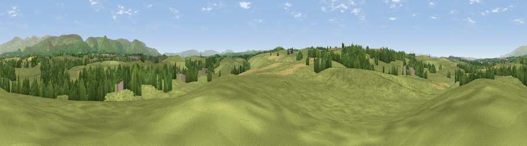

Viewpoint near Colby
#23678 in England · top 74% of its area beats it · near ColbyThe view, rendered

A 360° render of this exact spot computed from the terrain model, tree cover and land cover — summer colours, afternoon light, calibrated against photographs of famous viewpoints. Real trees, hedges and buildings will differ in detail.
The panorama
Grey silhouette: terrain skyline in each direction (720 bearings, Earth curvature and refraction included). Dashed green: skyline with trees (+15 m) and buildings (+8 m) as obstacles. Blue strip: how far the ground is visible on each bearing.
Where the view opens
Wedge length = distance to the farthest visible ground on that bearing (vegetation-aware). Rings at 10, 25 and 50 km.
What fills the view
82% grassland · 12% woodland · 4% cropland · 1% built-up
Angular shares of the visible panorama (visual magnitude), not map area. Landscape diversity 0.26 (0–1 Shannon).
Key numbers
More beautiful places nearby
The staircase of upgrades: each row has a higher view potential than everything closer. Driving times are estimates from straight-line distance, calibrated against real road routing — check an actual route before setting out.
| Place | Direction | Drive | Score |
|---|---|---|---|
| Viewpoint near Colby | ESE · 1 km | ~4 min | 50.6 |
| Viewpoint near Colby | W · 2 km | ~5 min | 57.9 |
| Threat Rigg | WNW · 2 km | ~5 min | 58.5 |
| Viewpoint near Hoff | SSW · 3 km | ~8 min | 59.4 |
| Viewpoint near Maulds Meaburn | SW · 5 km | ~10 min | 61.3 |
| Viewpoint near Maulds Meaburn | SSW · 5 km | ~12 min | 61.8 |
| Viewpoint near Maulds Meaburn | SSW · 6 km | ~13 min | 62.2 |
| Viewpoint near Murton | ENE · 7 km | ~14 min | 70.9 |
54.58059, -2.52561 · source: screening · position refined by local search. Computed location — check access rights before visiting.